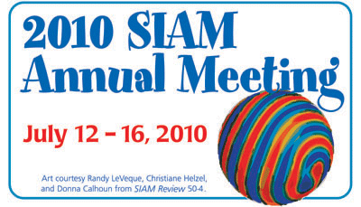

SIAM AN10 Minisymposium on Analyzing Massive Real-World Graphs
David L. Lawrence Convention Center
Pittsburgh, PA
12-16 July 2010
Scope and Goals:
Emerging real-world graph problems include detecting community structure in large social networks, improving the resilience of the electric power grid, and detecting and preventing disease in human populations. Unlike traditional applications in computational science and engineering, solving these problems at scale often raises new challenges because of sparsity and the lack of locality in the data, the need for additional research on scalable algorithms and development of frameworks for solving these problems on high performance computers, and the need for improved models that also capture the noise and bias inherent in the torrential data streams.
Location:
This workshop is co-located with SIAM AN10, held 12-16 July 2010, at the David L. Lawrence Convention Center
in Pittsburgh, PA. Registration information for AN10 can be found at here.
Program:
Monday, July 12
10:30 AM - 12:30 PM
Room: Spirit of Pittsburgh B - Level 3
- 10:30-10:55 People You May Know
- Lars Backstrom, Facebook
- Facebook's friend recommendation system helps people connect with their friends. Our system, called People You May Know, uses a combination of results from sociology and machine learning to make the best suggestions possible. We will look at some of the challenges involved in building a system that can handle the scale of Facebook and provide high quality recommendations. In this talk I will discuss both the algorithmic and machine learning challenges that we have faced and overcome in building this system.
- 11:00-11:25 Modularity and Graph Algorithms
- Joe McCloskey, National Security Agency; David A. Bader, Georgia Institute of Technology
- A number of graph partitioning algorithms are based on the concept of modularity. In particular Clauset, Newman and Moore (CNM) have developed a greedy agglomerative graph partitioning algorithm that scales well but is known to have several flaws. Fortunato and Barthelemy have performed a rigorous analysis of the CNM algorithm that elucidates it problems. More recently Berry, Hendrickson, Laviolette, and Phillips have derived a weighted variant of CNM that performs much better in practice. This talk will focus on a different version of the parent CNM algorithm based on a statistical re-interpretation of CNM that also addresses some of the issues with the original algorithm.
- 11:30-11:55 Exploiting Sparsity in the Statistical Analysis of Gene Expression Data
- Padma Raghavan, Anirban Chatterjee, and Francesca Chiaromonte, Pennsylvania State University
- 12:00-12:25 Scalable Methods for Representing, Characterizing, and Generating Large Graphs
- Ali Pinar, Sandia National Laboratories
4:00 PM - 6:00 PM
Room: Spirit of Pittsburgh B - Level 3
- 4:00-4:25 Hybrid Parallel Programming for Massive Graph Analysis
- Kamesh Madduri, Lawrence Berkeley National Laboratory
- 4:30-4:55 Tools and Primitives for High-performance Graph Computation
- John Gilbert, University of California, Santa Barbara
- 5:00-5:25 Practical Heuristics for Inexact Subgraph Isomorphism
- Jon Berry, Sandia National Laboratories
- 5:30-5:55 Spectral Methods for Subgraph Detection
- Nadya Bliss and Benjamin A. Miller, Massachusetts Institute of Technology; Patrick J. Wolfe, Harvard University
- We describe a statistical test for subgraph detection and localization using spectral properties of the so-called modularity matrix, a type of residual under the Chung-Lu random graph model. We show that the resultant algorithmic procedure can be applied to very large graphs ($< 10^6$ vertices), with complexity dominated by that of standard sparse eigensolver methods, and can successfully isolate anomalous vertices in real data examples.
Workshop Organizer:
- David A. Bader, Georgia Institute of Technology